Fuzzy Blur Filter
Introduction
This article serves to illustrate the concepts involved in implementing a Fuzzy Blur Filter. This filter results in rendering non-photo realistic images which express a certain artistic effect.
Frog: Filter Size 19×19
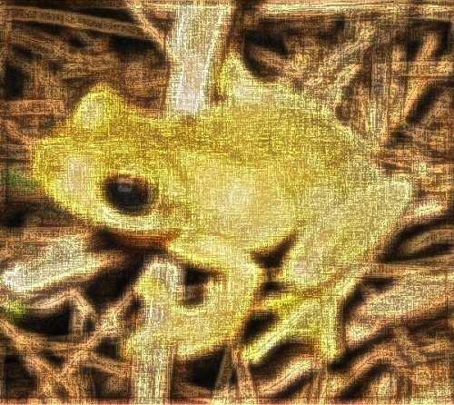
Building the Sample
There are no special requirements or instructions for building the sample source code.
Using the Sample Application
The sample source code accompanying this article includes a Windows Forms based test application. The concepts explored throughout this article can be replicated/tested using the sample application.
When executing the sample application the user interface exposes a number of configurable options:
-
Edge Factors – The contrast of fuzzy image noise expressed in resulting images depend on the specified edge factor values. Values less than one result in detected image edges being darkened and values greater than one result in detected image edges being lightened.
The following image is a screenshot of the Fuzzy Blur Filter sample application in action:
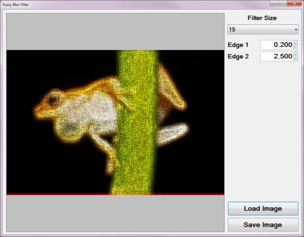
Frog: Filter Size 9×9
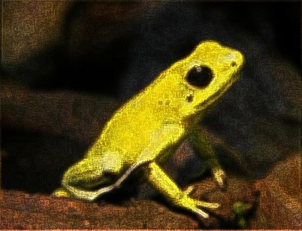
Fuzzy Blur Overview
The Fuzzy Blur Filter relies on the interference of image noise when performing edge detection in order to create a fuzzy effect. In addition image blurring results from performing a mean filter.
The steps involved in performing a Fuzzy Blur Filter can be described as follows:
-
Edge Detection and Enhancement – Using the first edge factor specified enhance image edges by performing Boolean Edge detection. Being sensitive to image noise, a fair amount of detected image edges will actually be image noise in addition to actual image edges.
-
Mean Filter Blur – Using the edge enhanced image created in the previous step perform a mean filter blur. The enhanced edges will be blurred since a Mean filter does not have edge preservation properties. The size of the Mean filter implemented depends on a user specified value.
-
Edge Detection and Enhancement - Using the Mean filter blurred image created in the previous step once again perform Boolean Edge detection, enhancing detected edges according to the second edge factor specified.
Frog: Filter Size 9×9
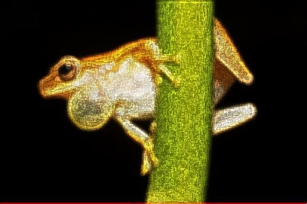
Mean Filter Blurring
A Mean Filter Blur, also known as a Box Blur, can be performed through image convolution. The size of the matrix/kernel implemented when preforming image convolution will be determined through user input.
Every matrix/kernel element should be set to one. The resulting value should be multiplied by a factor value equating to one divided by the matrix/kernel size. As an example, a matrix/kernel size of 3×3 can be expressed as follows:
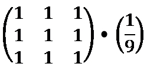
An alternative expression can also be:
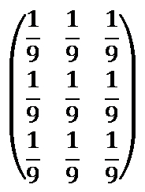
Frog: Filter Size 9×9
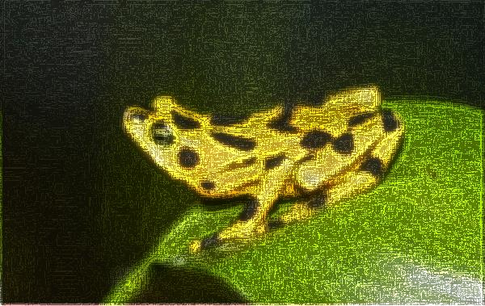
Boolean Edge Detection without a local threshold
When performing Boolean Edge Detection a local threshold should be implemented in order to exclude image noise. In this article we rely on the interference of image noise in order to render a fuzzy image effect. By not implementing a local threshold when performing Boolean Edge detection the sample source code ensures sufficient interference from image noise.
The steps involved in performing Boolean Edge Detection without a local threshold can be described as follows:
- Calculate Neighbourhood Mean – Iterate each pixel forming part of the source/input image. Using a 3×3 matrix size calculate the mean value of the neighbourhood surrounding the pixel currently being iterated.
- Create Mean comparison Matrix – Once again using a 3×3 matrix size compare each neighbourhood pixel to the newly calculated mean value. Create a temporary 3×3 size matrix, each matrix element’s value should be the result of mean comparison. Should the value expressed by a neighbourhood pixel exceed the mean value the corresponding temporary matrix element should be set to one. When the calculated mean value exceeds the value of a neighbourhood pixel the corresponding temporary matrix element should be set to zero.
- Compare Edge Masks – Using sixteen predefined edge masks compare the temporary matrix created in the previous step to each edge mask. If the temporary matrix matches one of the predefined edge masks multiply the specified factor to the pixel currently being iterated.
Note: A detailed article on Boolean Edge detection implementing a local threshold can be found here: C# How to: Boolean Edge Detection
Frog: Filter Size 9×9
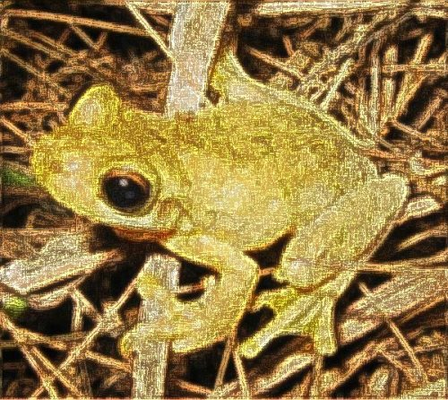
The sixteen predefined edge masks each represent an image edge in a different direction. The predefined edge masks can be expressed as:
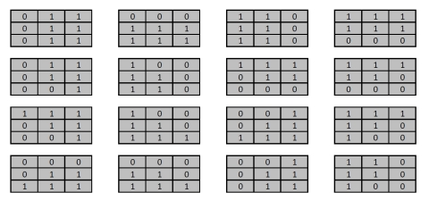
Frog: Filter Size 13×13
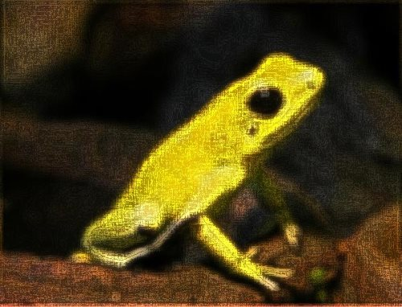
Implementing a Mean Filter
The sample source code defines the MeanFilter method, an extension method targeting the Bitmap class. The definition listed as follows:
private static Bitmap MeanFilter(this Bitmap sourceBitmap,
int meanSize)
{
byte[] pixelBuffer = sourceBitmap.GetByteArray();
byte[] resultBuffer = new byte[pixelBuffer.Length];
double blue = 0.0, green = 0.0, red = 0.0;
double factor = 1.0 / (meanSize * meanSize);
int imageStride = sourceBitmap.Width * 4;
int filterOffset = meanSize / 2;
int calcOffset = 0, filterY = 0, filterX = 0;
for (int k = 0; k + 4 < pixelBuffer.Length; k += 4)
{
blue = 0; green = 0; red = 0;
filterY = -filterOffset;
filterX = -filterOffset;
while (filterY <= filterOffset)
{
calcOffset = k + (filterX * 4) +
(filterY * imageStride);
calcOffset = (calcOffset < 0 ? 0 :
(calcOffset >= pixelBuffer.Length - 2 ?
pixelBuffer.Length - 3 : calcOffset));
blue += pixelBuffer[calcOffset];
green += pixelBuffer[calcOffset + 1];
red += pixelBuffer[calcOffset + 2];
filterX++;
if (filterX > filterOffset)
{
filterX = -filterOffset;
filterY++;
}
}
resultBuffer[k] = ClipByte(factor * blue);
resultBuffer[k + 1] = ClipByte(factor * green);
resultBuffer[k + 2] = ClipByte(factor * red);
resultBuffer[k + 3] = 255;
}
return resultBuffer.GetImage(sourceBitmap.Width, sourceBitmap.Height);
}
private static Bitmap MeanFilter(this Bitmap sourceBitmap, int meanSize) { byte[] pixelBuffer = sourceBitmap.GetByteArray(); byte[] resultBuffer = new byte[pixelBuffer.Length]; double blue = 0.0, green = 0.0, red = 0.0; double factor = 1.0 / (meanSize * meanSize); int imageStride = sourceBitmap.Width * 4; int filterOffset = meanSize / 2; int calcOffset = 0, filterY = 0, filterX = 0; for (int k = 0; k + 4 < pixelBuffer.Length; k += 4) { blue = 0; green = 0; red = 0; filterY = -filterOffset; filterX = -filterOffset; while (filterY <= filterOffset) { calcOffset = k + (filterX * 4) + (filterY * imageStride); calcOffset = (calcOffset < 0 ? 0 : (calcOffset >= pixelBuffer.Length - 2 ? pixelBuffer.Length - 3 : calcOffset)); blue += pixelBuffer[calcOffset]; green += pixelBuffer[calcOffset + 1]; red += pixelBuffer[calcOffset + 2]; filterX++; if (filterX > filterOffset) { filterX = -filterOffset; filterY++; } } resultBuffer[k] = ClipByte(factor * blue); resultBuffer[k + 1] = ClipByte(factor * green); resultBuffer[k + 2] = ClipByte(factor * red); resultBuffer[k + 3] = 255; } return resultBuffer.GetImage(sourceBitmap.Width, sourceBitmap.Height); }
Frog: Filter Size 19×19
Implementing Boolean Edge Detection
Boolean Edge detection is performed in the sample source code through the implementation of the BooleanEdgeDetectionFilter method. This method has been defined as an extension method targeting the Bitmap class.
The following code snippet provides the definition of the BooleanEdgeDetectionFilter extension method:
public static Bitmap BooleanEdgeDetectionFilter(
this Bitmap sourceBitmap, float edgeFactor)
{
byte[] pixelBuffer = sourceBitmap.GetByteArray();
byte[] resultBuffer = new byte[pixelBuffer.Length];
Buffer.BlockCopy(pixelBuffer, 0, resultBuffer,
0, pixelBuffer.Length);
List<string> edgeMasks = GetBooleanEdgeMasks();
int imageStride = sourceBitmap.Width * 4;
int matrixMean = 0, pixelTotal = 0;
int filterY = 0, filterX = 0, calcOffset = 0;
string matrixPatern = String.Empty;
for (int k = 0; k + 4 < pixelBuffer.Length; k += 4)
{
matrixPatern = String.Empty;
matrixMean = 0; pixelTotal = 0;
filterY = -1; filterX = -1;
while (filterY < 2)
{
calcOffset = k + (filterX * 4) +
(filterY * imageStride);
calcOffset = (calcOffset < 0 ? 0 :
(calcOffset >= pixelBuffer.Length - 2 ?
pixelBuffer.Length - 3 : calcOffset));
matrixMean += pixelBuffer[calcOffset];
matrixMean += pixelBuffer[calcOffset + 1];
matrixMean += pixelBuffer[calcOffset + 2];
filterX += 1;
if (filterX > 1)
{ filterX = -1; filterY += 1; }
}
matrixMean = matrixMean / 9;
filterY = -1; filterX = -1;
while (filterY < 2)
{
calcOffset = k + (filterX * 4) +
(filterY * imageStride);
calcOffset = (calcOffset < 0 ? 0 :
(calcOffset >= pixelBuffer.Length - 2 ?
pixelBuffer.Length - 3 : calcOffset));
pixelTotal = pixelBuffer[calcOffset];
pixelTotal += pixelBuffer[calcOffset + 1];
pixelTotal += pixelBuffer[calcOffset + 2];
matrixPatern += (pixelTotal > matrixMean
? "1" : "0");
filterX += 1;
if (filterX > 1)
{ filterX = -1; filterY += 1; }
}
if (edgeMasks.Contains(matrixPatern))
{
resultBuffer[k] =
ClipByte(resultBuffer[k] * edgeFactor);
resultBuffer[k + 1] =
ClipByte(resultBuffer[k + 1] * edgeFactor);
resultBuffer[k + 2] =
ClipByte(resultBuffer[k + 2] * edgeFactor);
}
}
return resultBuffer.GetImage(sourceBitmap.Width, sourceBitmap.Height);
}
public static Bitmap BooleanEdgeDetectionFilter( this Bitmap sourceBitmap, float edgeFactor) { byte[] pixelBuffer = sourceBitmap.GetByteArray(); byte[] resultBuffer = new byte[pixelBuffer.Length]; Buffer.BlockCopy(pixelBuffer, 0, resultBuffer, 0, pixelBuffer.Length); List<string> edgeMasks = GetBooleanEdgeMasks(); int imageStride = sourceBitmap.Width * 4; int matrixMean = 0, pixelTotal = 0; int filterY = 0, filterX = 0, calcOffset = 0; string matrixPatern = String.Empty; for (int k = 0; k + 4 < pixelBuffer.Length; k += 4) { matrixPatern = String.Empty; matrixMean = 0; pixelTotal = 0; filterY = -1; filterX = -1; while (filterY < 2) { calcOffset = k + (filterX * 4) + (filterY * imageStride); calcOffset = (calcOffset < 0 ? 0 : (calcOffset >= pixelBuffer.Length - 2 ? pixelBuffer.Length - 3 : calcOffset)); matrixMean += pixelBuffer[calcOffset]; matrixMean += pixelBuffer[calcOffset + 1]; matrixMean += pixelBuffer[calcOffset + 2]; filterX += 1; if (filterX > 1) { filterX = -1; filterY += 1; } } matrixMean = matrixMean / 9; filterY = -1; filterX = -1; while (filterY < 2) { calcOffset = k + (filterX * 4) + (filterY * imageStride); calcOffset = (calcOffset < 0 ? 0 : (calcOffset >= pixelBuffer.Length - 2 ? pixelBuffer.Length - 3 : calcOffset)); pixelTotal = pixelBuffer[calcOffset]; pixelTotal += pixelBuffer[calcOffset + 1]; pixelTotal += pixelBuffer[calcOffset + 2]; matrixPatern += (pixelTotal > matrixMean ? "1" : "0"); filterX += 1; if (filterX > 1) { filterX = -1; filterY += 1; } } if (edgeMasks.Contains(matrixPatern)) { resultBuffer[k] = ClipByte(resultBuffer[k] * edgeFactor); resultBuffer[k + 1] = ClipByte(resultBuffer[k + 1] * edgeFactor); resultBuffer[k + 2] = ClipByte(resultBuffer[k + 2] * edgeFactor); } } return resultBuffer.GetImage(sourceBitmap.Width, sourceBitmap.Height); }
Frog: Filter Size 13×13
The predefined edge masks implemented in mean comparison have been wrapped by the GetBooleanEdgeMasks method. The definition as follows:
public static List<string> GetBooleanEdgeMasks()
{
List<string> edgeMasks = new List<string>();
edgeMasks.Add("011011011");
edgeMasks.Add("000111111");
edgeMasks.Add("110110110");
edgeMasks.Add("111111000");
edgeMasks.Add("011011001");
edgeMasks.Add("100110110");
edgeMasks.Add("111011000");
edgeMasks.Add("111110000");
edgeMasks.Add("111011001");
edgeMasks.Add("100110111");
edgeMasks.Add("001011111");
edgeMasks.Add("111110100");
edgeMasks.Add("000011111");
edgeMasks.Add("000110111");
edgeMasks.Add("001011011");
edgeMasks.Add("110110100");
return edgeMasks;
}
public static List<string> GetBooleanEdgeMasks() { List<string> edgeMasks = new List<string>(); edgeMasks.Add("011011011"); edgeMasks.Add("000111111"); edgeMasks.Add("110110110"); edgeMasks.Add("111111000"); edgeMasks.Add("011011001"); edgeMasks.Add("100110110"); edgeMasks.Add("111011000"); edgeMasks.Add("111110000"); edgeMasks.Add("111011001"); edgeMasks.Add("100110111"); edgeMasks.Add("001011111"); edgeMasks.Add("111110100"); edgeMasks.Add("000011111"); edgeMasks.Add("000110111"); edgeMasks.Add("001011011"); edgeMasks.Add("110110100"); return edgeMasks; }
Frog: Filter Size 19×19
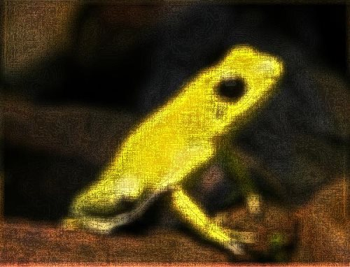
Implementing a Fuzzy Blur Filter
The FuzzyEdgeBlurFilter method serves as the implementation of a Fuzzy Blur Filter. As discussed earlier a Fuzzy Blur Filter involves enhancing image edges through Boolean Edge detection, performing a Mean Filter blur and then once again performing Boolean Edge detection. This method has been defined as an extension method targeting the Bitmap class.
The following code snippet provides the definition of the FuzzyEdgeBlurFilter method:
public static Bitmap FuzzyEdgeBlurFilter(this Bitmap sourceBitmap,
int filterSize,
float edgeFactor1,
float edgeFactor2)
{
return
sourceBitmap.BooleanEdgeDetectionFilter(edgeFactor1).
MeanFilter(filterSize).BooleanEdgeDetectionFilter(edgeFactor2);
}
public static Bitmap FuzzyEdgeBlurFilter(this Bitmap sourceBitmap, int filterSize, float edgeFactor1, float edgeFactor2) { return sourceBitmap.BooleanEdgeDetectionFilter(edgeFactor1). MeanFilter(filterSize).BooleanEdgeDetectionFilter(edgeFactor2); }
Frog: Filter Size 3×3
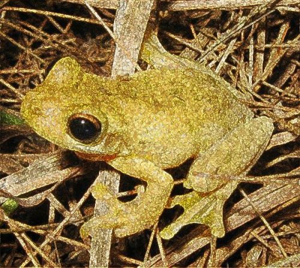
Sample Images
This article features a number of sample images. All featured images have been licensed allowing for reproduction. The following images feature as sample images:
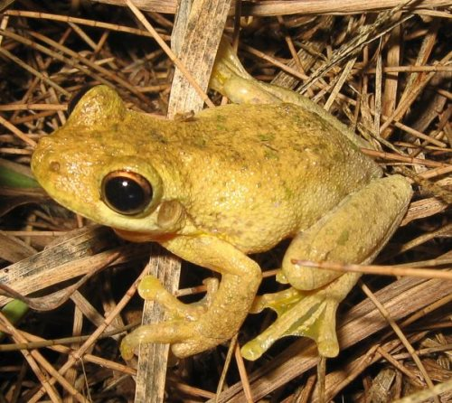
- Tyler’s Tree Frog
- Attribution: LiquidGhoul. This file has been released into the public domain by its author, LiquidGhoul. This applies worldwide.
- Download from Wikipedia.
{kind=link}
- Phyllobates Terribilis
- Attribution: Wilfried Berns. This file is licensed under the Creative Commons Attribution-Share Alike 2.0 Germany license.
- Download from Wikipedia.
{kind=link}
.jpg)
- Dendropsophus Microcephalus
- Attribution: Brian Gratwicke. This file is licensed under the Creative Commons Attribution 2.0 Generic license.
- Download from Wikipedia
.jpg){kind=link}
- Panamanian Golden Frog
- Attribution: Brian Gratwicke. This file is licensed under the Creative Commons Attribution 2.0 Generic license.
- Download from Wikipedia.
{kind=link}
Source Code Files
- ExtBitmap.cs - Contains the definition of the FuzzyEdgeBlurFilter, MeanFilter and BooleanEdgeDetectionFilter extension methods.
- MainForm.cs - Windows Forms based Sample Application.
More Information
This article is based on an article originally posted on my blog: http://softwarebydefault.com/2013/08/09/fuzzy-blur-filter/ If you have any questions/comments please feel free to make use of the Q&A section on this page, also please remember to rate this article.